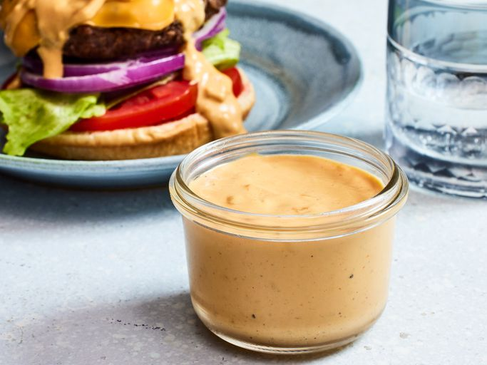

Home
Burger Sauce

This burger sauce has a zippy flavor that goes well in sandwiches or as a fry dip.
It's a tangy sauce that can be made spicy or milder for kids.
- Condiments
- Seasonings
- Hot sauce
- Vinegar
- Gather all ingredients.
- Whisk together mayonnaise, ketchup, mustard, onion, garlic, and vinegar in a bowl.
- Season with hot sauce and seasoned pepper.
- Cover and chill at least 1 hour before serving.
- Serve and enjoy!